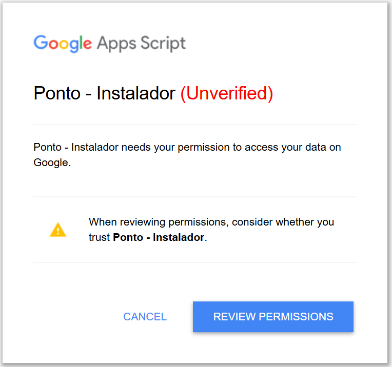
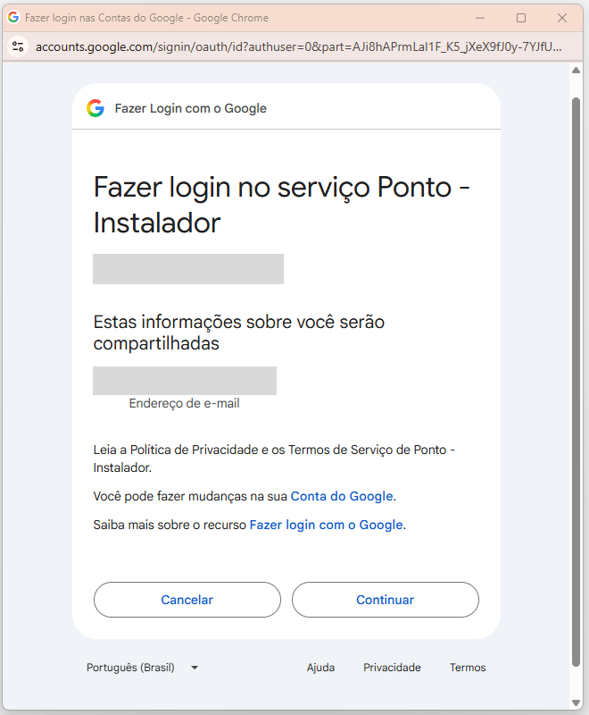
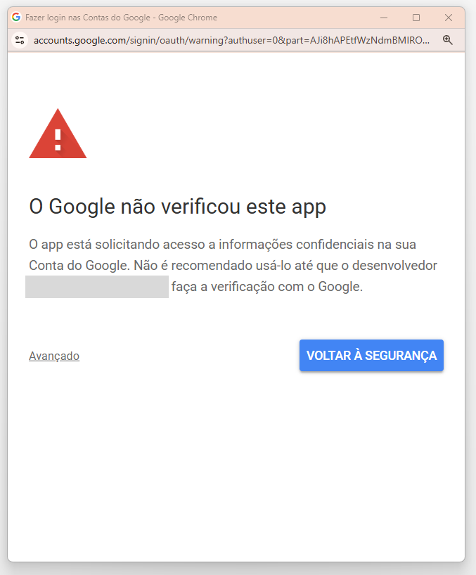
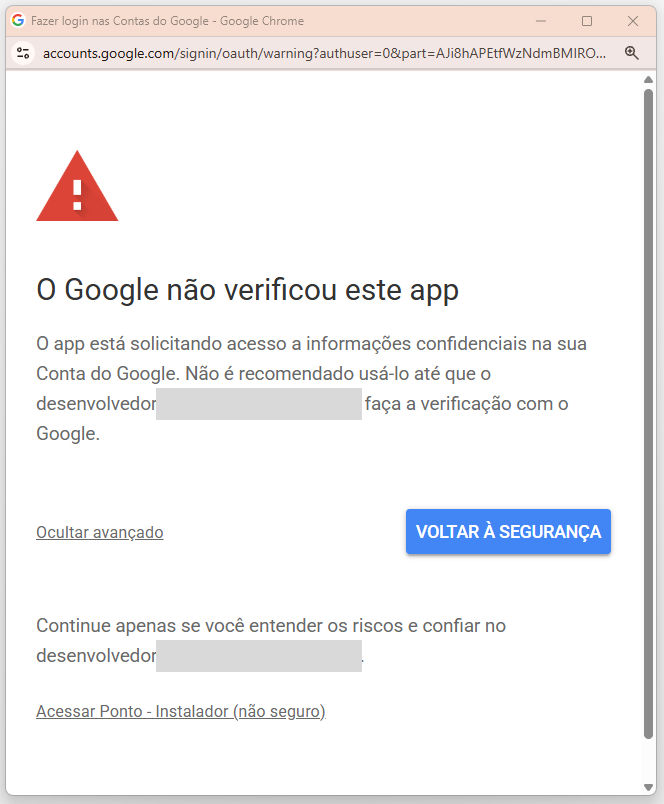
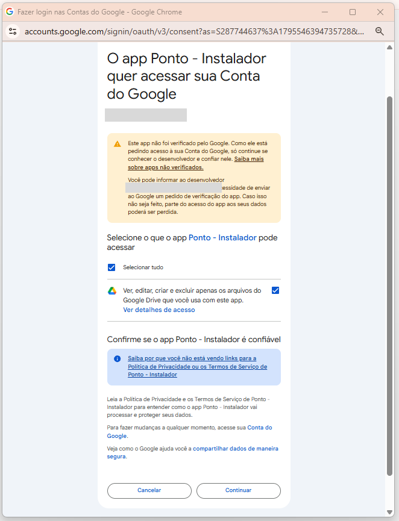
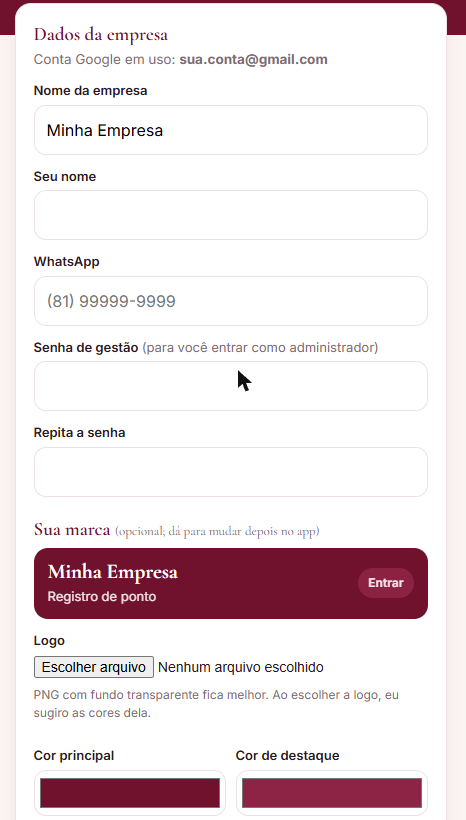
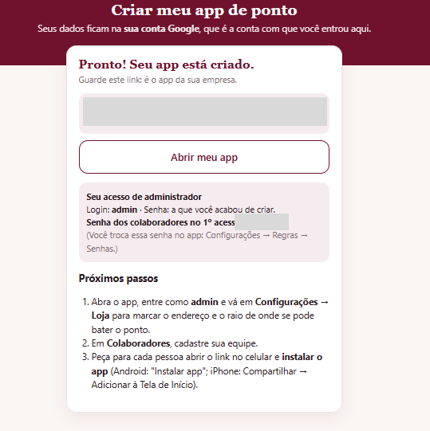

- ✅ Só os arquivos que o próprio instalador cria: a planilha do ponto e a pasta de fotos.
- ✅ O seu e-mail, para saber em qual conta criar.
- 🚫 Não enxerga o resto do seu Drive, seus e-mails nem seus contatos.
Para o app funcionar, a conta que opera o sistema recebe acesso de editor só a essa planilha e a essa pasta. Você pode tirar esse acesso quando quiser no seu Google Drive (mas aí o app para).
Autorização necessária
Ao tocar em "Criar meu app com a conta Google", aparece esta tela. Toque em REVIEW PERMISSIONS (Revisar permissões).

Escolha a sua conta
Se o Google perguntar, escolha a conta da empresa (é nela que a planilha vai ficar). Depois toque em Continuar.

Se aparecer "O Google não verificou este app"
O app ainda está em fase de testes com o Google. Toque em Avançado…

…e depois em Acessar Ponto - Instalador (não seguro).

Confira o que o app pode acessar
A lista mostra só "arquivos do Google Drive que você usa com este app". Deixe marcado e toque em Continuar.

Preencha os dados e a marca
Nome da empresa, seu nome, WhatsApp e a senha de gestão (é com ela que você entra como administrador). Se quiser, já coloque a logo: as cores são sugeridas a partir dela. Marque "Entendi onde ficam os dados" e toque em Criar meu app.

Pronto!
Em cerca de 30 segundos aparece o link do seu app. Guarde esse link e anote a senha dos colaboradores no 1º acesso.

Abra o link do instalador de novo: ele reaproveita o que já criou, sem duplicar nada. Se continuar, mande um print da tela no WhatsApp.
Voltar e criar meu app